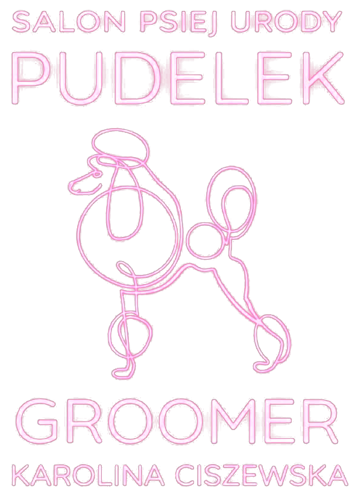

u nas pupil czuje się jak u siebie
Fryzura, po której ogon nie przestaje merdac.
Salon Psiej Urody Pudelek to kącik tuż przy Poczcie na Jagiellońskiej w Piotrkowie Trybunalskim. Twój pies albo kot dostaje tu tyle czasu i cierpliwości, ile akurat potrzebuje. Strzyżemy, kąpiemy i czeszemy bez pośpiechu.

Nie wiesz, co wybrać? Zadzwoń, doradzimy przez telefon.
kto się nimi zajmie
Karolina
Ciszewska.
Cierpliwości starcza jej na najbardziej stremowanego psa w mieście.
Za nożyczkami w Pudelku stoi Karolina Ciszewska. Klienci wracają nie tylko po fryzurę, ale po spokojne podejście: do szczeniaka na pierwszej wizycie, do seniora, który już boi się suszarki, i do każdego pupila, który wolałby dziś być gdzie indziej. W opiniach najczęściej pada jedno słowo: cierpliwa.
nasze metamorfozy
Zobacz, kto od nas wychodzi.
mówią o nas
Co pisza własciciele.
„Przemiła obsługa! Pani z miłym podejściem do pupili! Kolejne strzyżenie i kolejna piękna fryzura.”
„Wspaniałe miejsce pełne ciepła i prawdziwej miłości do zwierząt. Od wejścia czuć przyjazną atmosferę, a personel jest miły, cierpliwy i troskliwy.”
„Byłam w tym salonie i jestem mega zadowolona! Obsługa bardzo miła, profesjonalna i widać, że naprawdę kochają zwierzęta.”
„Najlepsze ręce, w które mógł trafić mój piesek. Zawsze jesteśmy zadowoleni, super podejście do czworonoga i duży profesjonalizm.”
„Cudowne strzyżenie szpica miniaturowego, polecam w 100%!”
„Kolejne strzyżenie i, jak zwykle, przepięknie, punktualnie, bezstresowo. Jak najbardziej polecam.”
Sobota: 10:00–14:00